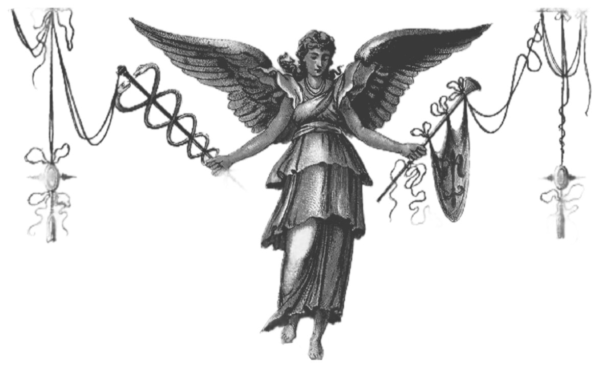

Save the Date 9 September 2028 in Málaga, Spain.
We’d love you to join us for our wedding and stay with us at Hotel Fuente del Sol.
We’ve set aside a room for you, with the option to stay from Friday 8 to Monday 11 September
There’ll be a small welcome gathering on Friday and a pool party on Sunday, so we hope you can make a weekend of it!
We’d love to have you stay with us over our wedding weekend, from 8–11 September 2028.
Below are our proposed guest package prices, based on two people sharing a room. They include accommodation, breakfast for all mornings, & pool party food on Sunday.
| Room type | Per person/ night | Total for 3 nights |
|---|---|---|
| Económica | €85 | ~£425 |
| Standard | €95 | ~£475 |
| Standard Superior | €105 | ~£525 |
| Junior Suite | €110 | ~£550 |
| Suite | €120 | ~£600 |
| Bungalow Deluxe | €125 | ~£625 |